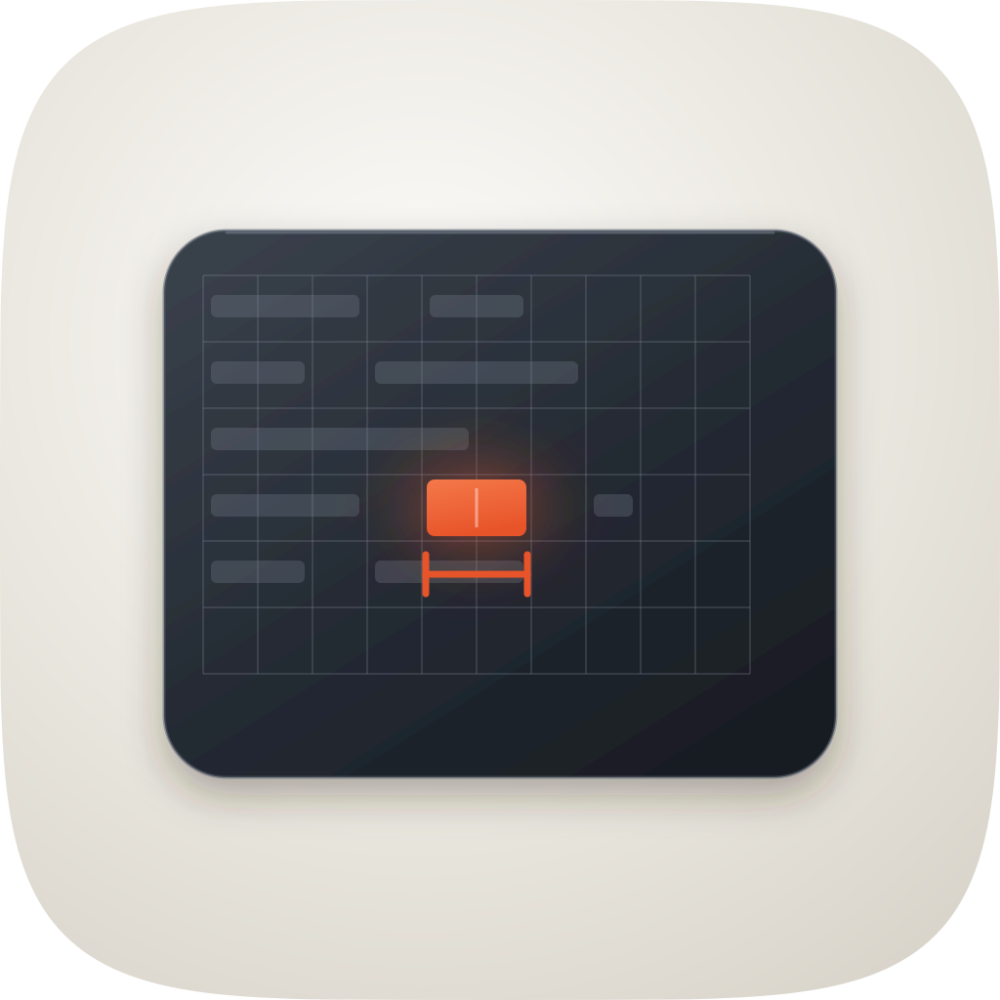
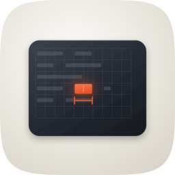
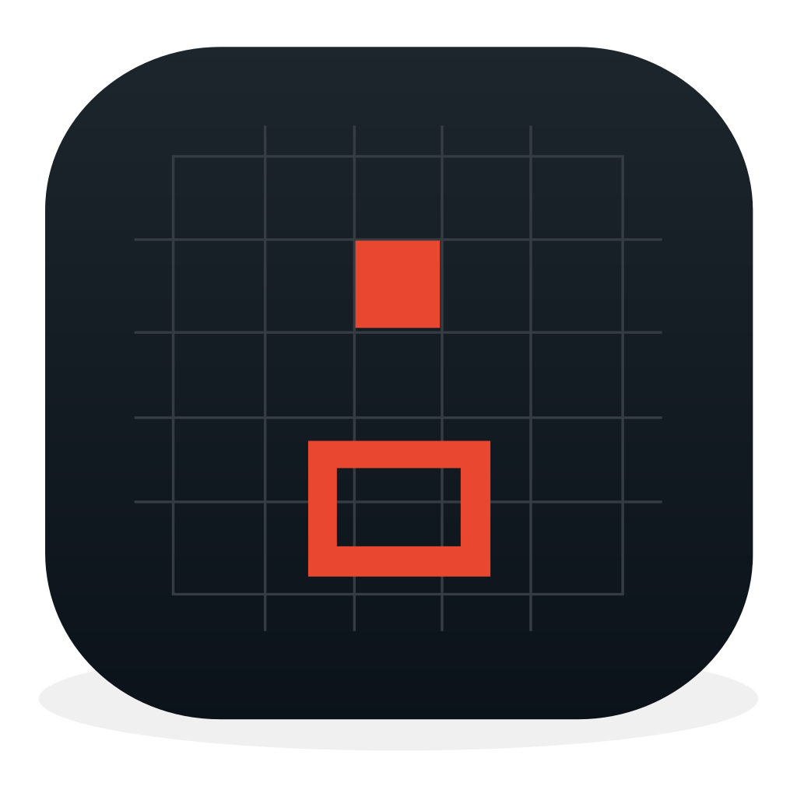
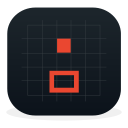
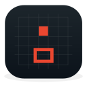
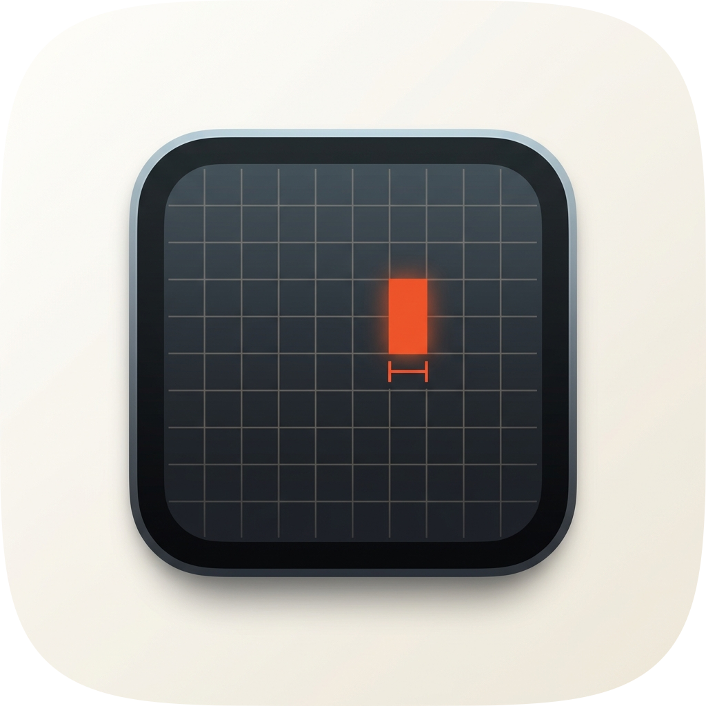
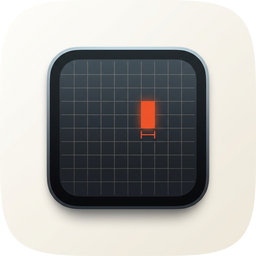
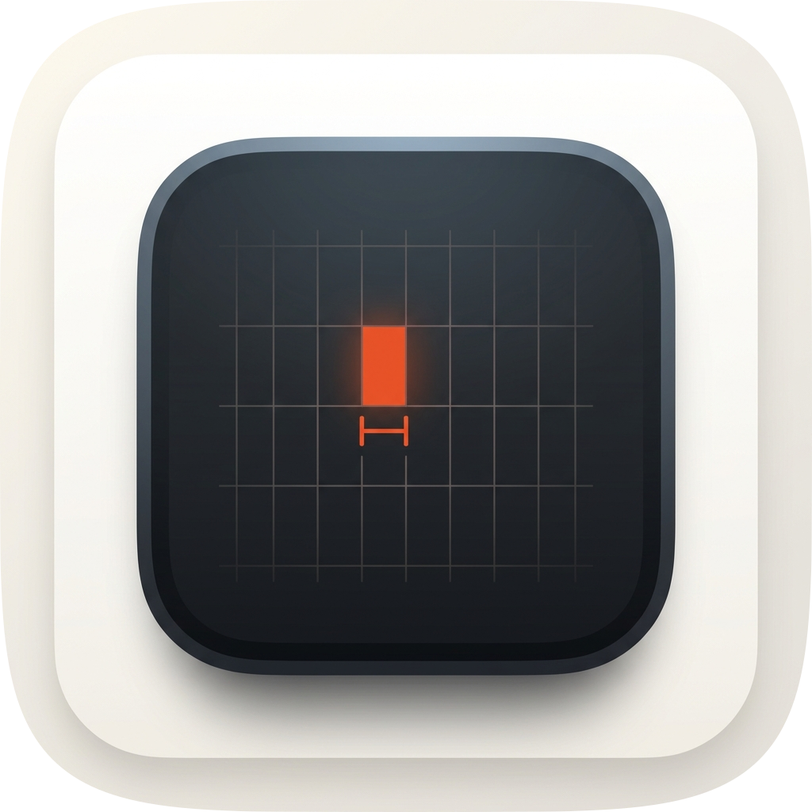
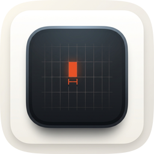

Decorative marketplace tile, not an Icon Composer production package — the material has to be in the file because nothing downstream will add it. Three engines, four takes, master shipped from Engine A. Every take audited on real renders at 1024 / 128 / 64 / 48 / 32 / 16.
Scores on this sheet are retrospective, written 19 Aug 2026.
The commission (17 Aug) produced the four takes, their renders and the per-take verdicts below,
but recorded no numeric rubric score, so the sheet carried a comparison with no arithmetic behind
it. The four scores were assigned on 19 Aug by reading the twelve-point rubric in
icon-directions.md against the renders in audit-renders/ — not at
commission time. The prose verdicts are the commission's own and are unchanged except where a
render contradicted one, which is marked in place. Two things this sheet does not record,
because the directory holds no evidence of them: no fidelity loop ran (there is no
fidelity-runs/ here and no icon-notes.md), and no blind judge panel saw
these takes. The rubric table below was also relabelled on 19 Aug from the commission's own
twelve-item wording onto the canonical numbering, so that 11 / 12
is checkable against the
marketplace's rubric rather than against a private one.

| Take | Hero at 1024, then 128 / 64 / 48 / 32 / 16 css px (2× retina sources) | Rubric | Verdict |
|---|---|---|---|
| Engine A — hand-authored SVG the master |
hero 1024
 12864
48
32
16
|
11 / 12clears 1–4 | SHIP — drops #10 only. Full-bleed 1024 with
squircle-path.txt as a clip, no baked radius and no baked tile shadow;
device inset 168/236 with the mass balanced; at a true 16px it resolves to a dark panel with
a warm mark right of centre, which is the intended reduction. #10 is the deduction and it is
measured, not predicted: see the liabilities. |
| Engine B — Arrow vector |  hero 1024 128 6448
32
16
|
4 / 12fails 1, 3, 4, 5, 8, 9, 10, 11 | Hard-fails three non-negotiables. #1: a rounded-rect tile and an
elliptical drop shadow are both baked into the artwork, on a 150×158 viewBox
that is not square, so it can never take the family superellipse. #3: filled solid black it is
a rounded rectangle and nothing is nameable. #4: at 16px the filled cell and the hollow cell
merge into one warm smear and the metaphor is gone. Flat fills carry no light model at all
while the baked shadow implies one (#5, #8, #9), and there are no layers (#10). The
commission's note read “no contact shadow”; the render shows a baked elliptical one
under the tile, which is worse than none — corrected here on 19 Aug against
engineB-1024.png. Composition confirmed the metaphor reads; nothing was salvaged
into the master. |
| Engine C — Gemini raster (take 2) |  hero 1024 12864
48
32
16
|
9 / 12fails 1, 10, 11 | Won the material read, as the pipeline expects: the rim light on the device's top edge and the glow bloom around the lit cell were both lifted into the master. Ships nothing. #1: the device is drawn as a second rounded rect with its own baked shadow inside the frame, so masking it to the squircle just crops a picture of a tile. #10: a flat pre-masked raster is the corpus's named 76% failure by definition. #11: the lit glyph occupies one cell and the caliper is a hairline, so the signature device — one glyph across two cells, measured — is absent, and what is left is a glyph on a grid. Below the bar and failing a non-negotiable. |
| Engine C — Gemini raster (take 1) |  hero 1024 12864
48
32
16
|
8 / 12fails 1, 3, 10, 11 | Nested squircle inside a squircle inside a squircle — three concentric frames before the subject starts. #3 is the hard one: filled black it is a tile in a tile, which names no subject and breaks the family silhouette outright. Carries the same #1 and #10 raster failures as its sibling and the same one-cell glyph (#11). Kept on the sheet as the reason a second raster prompt was run at all. |
| Take | 32px source, magnified |
|---|---|
| Master | |
| Engine C take 2 |
At 16–32px the master reduces to a dark rounded panel with a warm mark right of centre. That is the intended reduction: recognisable as a terminal, distinct from every other tile in the marketplace, and it does not attempt to keep the caliper.
Numbering is icon-directions.md's.
Where a row's observation is the commission's own it is kept verbatim; where the row is new, or where
a measurement contradicted the commission, it says so.
| Check | Result |
|---|---|
| 1. Mask discipline — designed for the squircle, no baked corners or shadow (non-negotiable) | PASS — squircle-path.txt as a clipPath at the tile. The only feDropShadow is the device's own, inside the clip. |
| 2. Grid adherence — optically centred, safe-zone margins (non-negotiable) | PASS — device inset 168/236, weight balanced. Its 688px width is 67% of the tile, a little over the 55–65% band; noted rather than deducted. |
| 3. Silhouette test — nameable filled solid black (non-negotiable) | PASS with a note — the filled silhouette is a landscape panel inside the tile, nameable as a terminal. Added 19 Aug: the distinguishing half of the metaphor, one glyph across two cells with a caliper, does not survive to silhouette; it is carried by value and accent, which #4 covers and #3 does not. |
| 4. 16px squint — survives menu-bar and Spotlight (non-negotiable) | PASS — verified on master-32.png at true 16px: dark panel, warm mark right of centre. |
| 5. Single light model | PASS — key from top-left; rim on the top edge, contact shadow below. |
| 6. Palette economy — ≤2 hue families, accent reserved for the focal | PASS — warm neutral ground + charcoal, one vermilion accent spent on the lit cell and its caliper. |
| 7. Figure-ground — glyph vs ground ≥3:1, survives grayscale | PASS (added 19 Aug) — charcoal device on porcelain is the widest value gap in the set; it survives grayscale outright. |
| 8. Depth coherence — planes ordered, shadows match light | PASS — device gradient, glow bloom, contact shadow and rim, in that order, all consistent with the top-left key. |
| 9. Era coherence | PASS (added 19 Aug) — one soft key, no hard specular, cushioned ground: the current era's language throughout. |
| 10. Variant robustness — survives Default/Dark/Clear/Tinted, identity not hostage to one background (76% of the corpus fails here) | FAIL — the point drops, on the variant read alone. The identity is a charcoal panel on a porcelain ground that loses its separation the moment the ground changes register, and Dark, Clear and Tinted were never rendered, so that half rests on a reasoned read of the value scheme rather than on captures. The structural half of this row is now settled the other way: the commission claimed ground / device / grid+runs / accent+caliperand the file carried 0 named <g id> layers, which was corrected here on 19 Aug and then fixed in build_icon.py the same day. fidelity.py structure now reports 5 named layers (art / bg / mid / fg / highlight) and passes. The grouping wrappers carry no presentation attributes, so the 1024 render came back byte-identical: rms 0.000000, no changed bounding box, and the shipped icon.png needed no re-export. |
| 11. Personality — ≥1 nameable device beyond glyph-on-gradient | PASS — the hairline splitting one lit glyph across two cells, with a caliper measuring that width. Not a prompt chevron, not a gear. |
| 12. No-text | PASS (added 19 Aug) — the ruled runs are abstract bars, no glyphs, no words, no screenshot. |
Three further checks the commission ran that sit
outside the canonical twelve, kept because they are real findings: the master is the only landscape
dark panel in the marketplace lineup (nearest neighbour is should-compact's blocks); it
survives the 48px Finder and marketplace tile with the accent still registering and the caliper
merged; and it is rebuildable from build_icon.py, where every proportion is a named
constant.
icon-src.svg → icon.png /
icon-256.png / icon-128.png / icon-96.png / icon-64.png /
icon-48.png / icon-32.png), 11 / 12. It is the only take that clears
all four non-negotiables on real renders, the only one whose material is authored rather than
photographed, and the only one carrying the two-cell metaphor the skill is named for. Engine C won the
material read and both of its takes were mined for it — the rim light and the glow bloom around the lit
cell are in the master because of them — but a flat pre-masked raster cannot ship. Engine B contributed
a negative control. Known liabilities to revisit: (1) the #10 failure above is the
substantive one, and it is now half closed: the named layer plan was authored into
build_icon.py on 19 Aug, pixel-neutrally, so the structure gate passes. What remains is the
variant read, which is why the point still drops. (2) The
caliper is lost below ~64px; deliberate, it is the third read rather than the first.
(3) The grid is deliberately low-contrast at 0.22 opacity, so on a dim display the
panel may read as flat rather than ruled. (4) The focal group is 67% of tile width
against the 55–65% composition constant. (5) Dark, Clear and Tinted variants were
never rendered, so the #10 verdict rests on the structural measurement plus a reasoned read of the
value scheme, not on variant captures.rsvg-convert. ImageMagick's internal SVG engine silently drops
the gradients and filters — it produced an all-black tile on the first pass, which is why the
build documents the renderer.--take <id>=<file>:raster-mask against the
family superellipse, which is how a raster take is supposed to be audited.